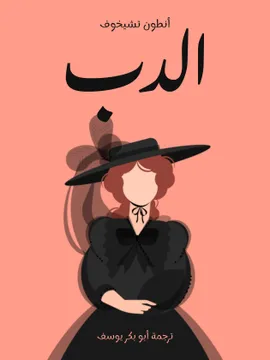

الدب: مزحة في فصل واحد

قراءة عربية أصلية محددة النطاق في الصفحات 11، 12 من ملف PDF المرتبط، وليست تلخيصا كاملا للكتاب. نناقش ما تدعمه هذه المقاطع فقط.
أرملة تعاهد القبر وخادم يعترض
يفتتح المشهد صراعه الصغير بين موقفين: بوبوفا التي قطعت على نفسها عهدًا ألا تنزع ثياب الحداد ولا ترى الدنيا حتى الممات، لتثبت لزوجها الراحل كيف تصون الحب رغم اعترافها بأنه ظلمها وقسا عليها ولم يخلص لها، ولوكا الذي يرى في بقائها بين أربعة جدران حياة كالعناكب، ويعدد ما تفوّت: ضباط الربع الحربي في ريبلوف، الحفل الراقص كل جمعة، الفرقة العسكرية. ويصل التوتر ذروته الهزلية حين تبكي لأن حصان زوجها «توبي» يستحق حصة شعير زيادة.
زاوية وحدود القراءة
قراءة في المشهد الافتتاحي من الصفحتين 11 و12 من «الدب» المترجمة، لا في المسرحية كاملة؛ وصول سميرنوف وتحول المواجهة خارج نطاق المقروء. أقوال بوبوفا عن زوجها من حوارها هي في لحظة حداد، لا حكم نهائي على الزواج. النص المقروء ترجمة عربية للأصل الروسي.
الطبعة والقراءة
هذه النسخة من الكتاب صادرة ومتاحة مجانًا بموجب اتفاق قانوني بين مؤسسة هنداوي وأسرة السيد الدكتور أبو بكر يوسف.
تنزيل PDF المجاني ↓ القراءة والمصدر الرسمي ↗